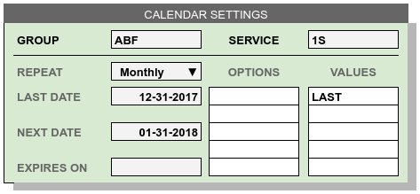

Calendar Operations¶
WARES performs repeating operations, such as creating lease space charges or calculating recurring storage, according to calendar settings.
Calendar items are activated when their next date comes due, and the action of the item is then processed according to request. Consequently calendar items are not necessarily performed at a specific date or time. For example, a recurring calendar item activated at the end of a month might be pended while inventory is reconciled, and then performed some number of days later.
Calendar items track the last date an action was performed, and set a Next Date for activating the item. Calendars may be perpetual, or a sunset date may be entered when the calendar will expire.
When a calendar item is performed, the Next Date entry is moved to Last Date, and a new Next Date entry is generated. There is also a Previous Date entry, not shown in the entry page, which allows a calendar item to be reversed (once) if the associated action is reversed or voided.
A calendar entry page with example setting is shown following.
A calendar item contains two types of entries: process control entries, described above, and scheduling definition entries. Scheduling is defined by a set of three related entry options.
- Repeat sets the span of the repeating period,
- Options may modify any values associated with the repeat, and
- Values lists specific days or dates for the calendared events.
| Repeat | Options | Values |
|---|---|---|
| Daily | Every, Any, Current | Day |
| Weekly | Sun, Mon, Tue, Wed, Thu, Fri, Sat | |
| BiWeekly | First, Second | Sun, Mon, Tue, Wed, Thu, Fri, Sat |
| Monthly | First, Second, Third, Fourth, Last | Sun, Mon, Tue, Wed, Thu, Fri, Sat
FIRST, 1, 2, 3, 4, 5, 6, 7, 8, 9, 10, 11, 12,
13, 14, 15, 16, 17, 18, 19, 20, 21, 22, 23,
24, 25, 26, 27, 28, 29, 30, LAST
|
| Quarterly | First, Second, Third | FIRST, 1, 2, 3, 4, 5, 6, 7, 8, 9, 10, 11, 12, 13, 14, 15, 16, 17, 18, 19, 20, 21, 22, 23, 24, 25, 26, 27, 28, 29, 30, LAST |
| SemiAnnually | First, Second, Third, Fourth, Fifth, Sixth | FIRST, 1, 2, 3, 4, 5, 6, 7, 8, 9, 10, 11, 12, 13, 14, 15, 16, 17, 18, 19, 20, 21, 22, 23, 24, 25, 26, 27, 28, 29, 30, LAST |
| Yearly | Jan, Feb, Mar, Apr, May, Jun, Jul, Aug, Sep, Oct, Nov, Dec | FIRST, 1, 2, 3, 4, 5, 6, 7, 8, 9, 10, 11, 12, 13, 14, 15, 16, 17, 18, 19, 20, 21, 22, 23, 24, 25, 26, 27, 28, 29, 30, LAST |
For Daily repeats, the options of Every, Any, and Current have the effect:
- Every requires the scheduled item to occur on every day. This would apply to daily recurring, for example,
- Any allows the action to run once for today, but process a range of days from the Last Date (plus 1) to today, and
- Current allows the action to run once from Last Date (plus 1) to the end of the current open period.